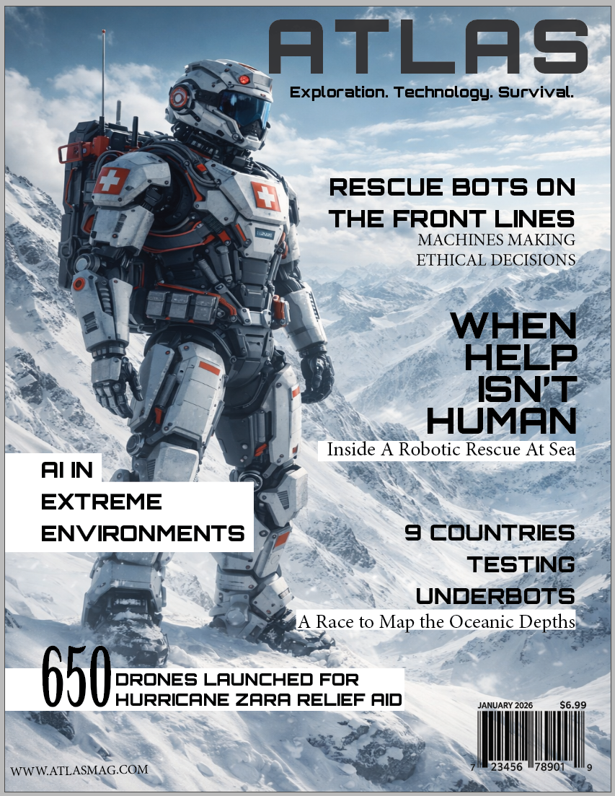
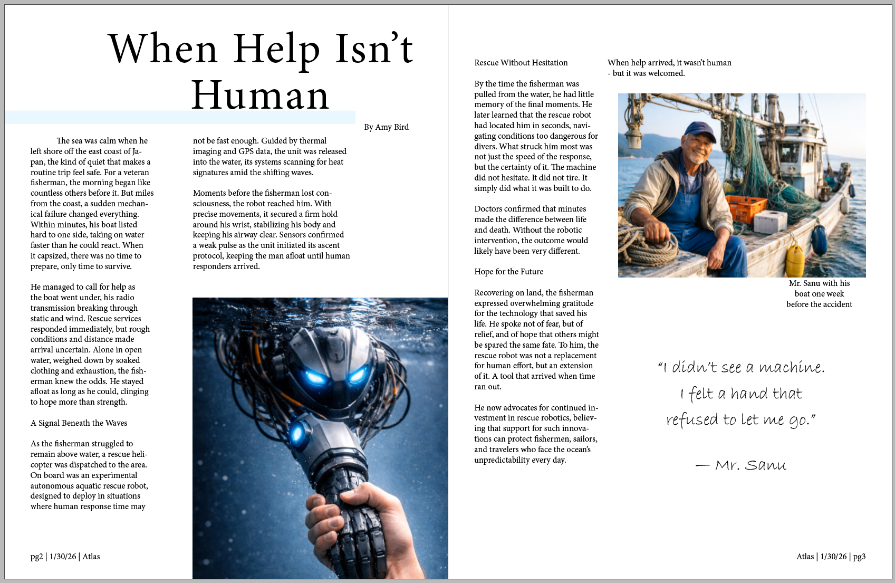

Editorial design
ATLAS Magazine
A speculative technology magazine cover and interior spread.


Project Overview
ATLAS is a speculative technology magazine concept focused on exploration, innovation, and survival. I designed a cover and two-page editorial spread featuring a fictional story about a robotic rescue at sea. The visual identity combines futuristic display typography with a more traditional article typeface, while dramatic imagery connects emerging technology to human experience. I worked with scale, alignment, columns, captions, and a pull quote to guide readers through the story. Revising the spread helped me improve text flow and visual balance. The finished pages demonstrate editorial composition and visual storytelling across a coordinated print-style publication for readers and visual cohesion.
Design & Development
I developed a visual identity, arranged the cover headlines, and revised the interior spread to improve spacing and article flow. The rescue narrative is fictional and was created as a conceptual editorial piece.